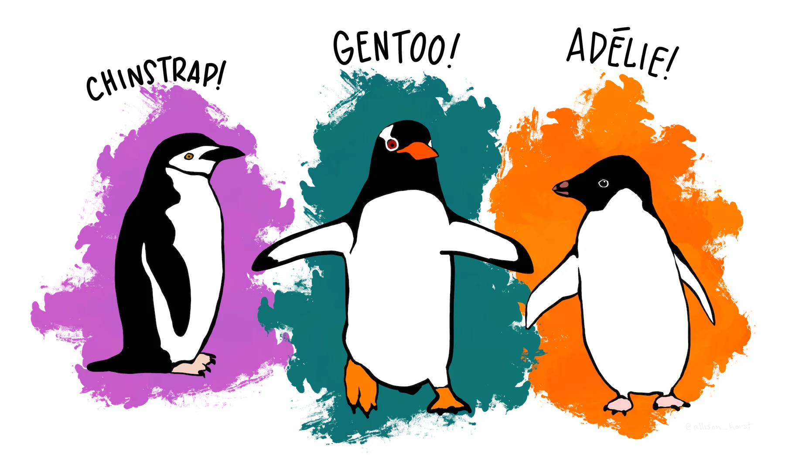
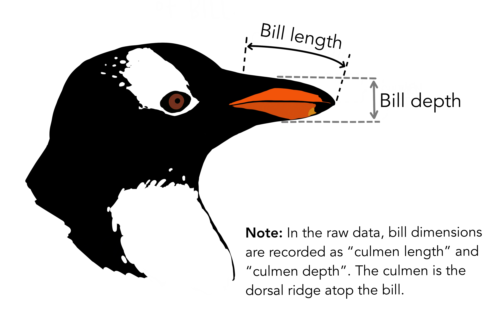

Post
Palmer's Penguins
Penguins at the Palmer Station Antarctica Long-Term Ecological Research site

In the icy realm of Antarctica, there are seven magnificent types of penguins that call the frozen wilderness their home: Gentoo, King, Adélie, Chinstrap, Southern Rockhopper, Emperor, and Macaroni penguins. Each of these penguin species possesses its own distinct characteristics, from size and coloration to unique adaptations that enable them to thrive in this harsh environment.
Meet the penguins
While the Gentoo penguin demonstrates impressive swimming abilities, the King Penguin claims the title of the second largest penguin species. Adélie penguins, on the other hand, are known for their extensive range and their ability to survive in extreme cold with their thick layer of fat. The Chinstrap penguin reveals its feisty side, amidst the freezing waters it calls its playground. Southern Rockhopper penguins display their striking yellow eyebrows and complex hunting behaviors. Emperor Penguins, the heavyweight champions, have developed extraordinary adaptations to endure the most extreme conditions. Lastly, the Macaroni penguins show off their distinctive crests and large breeding colonies, although their numbers unfortunately continue to decline. For these incredible creatures, vulnerable to the effects of climate change and human activities, conservation efforts now play a crucial role in ensuring their survival.

Bill length vs. body mass
The data included in Palmer's Penguins were collected from 2007–2009 by Dr. Kristen Gorman with the Palmer Station Long Term Ecological Research Program, part of the US Long Term Ecological Research Network.

At the Palmer Station, three species of penguins were measured on various structural aspects like body mass, bill length, bill depth and flipper length. Palmer LTER scientists have documented an 85 percent reduction in Adélie penguin populations along the western Antarctic Peninsula since 1974.
Penguins by island
The penguins were studied on three islands: Biscoe, Dream, and Torgersen.
Most penguins spend the majority of their life at sea and return to land to reproduce. Getting to and from their reproductive areas (called rookeries) on land can be quite a walk, but when there is snow to traverse, they often sled downhill to make quick descents.
Penguins are unique birds in that they do not fly. Their wings are adapted as swimming flippers by their wing bones being flattened and rather solidly joined so that they are very useful for swimming (up to 30 miles per hour). Penguins often look like they are flying when viewed under water.
Island time
The Adélie penguin (Pygoscelis adeliae) was named after the wife of one of the early Antarctic explorers (Dumont D'Urville). This small penguin (rarely over 11 pounds) nests on rocky areas that are free of snow in the summer. Adults return to the same rookery (nesting area) where they were born and build nests out of pebbles. The giving of pebbles to the female by the male is part of the nesting courtship. Nesting pairs may stay together for six years although each year about half the birds change their mate. Eggs are laid in November and chicks hatch in December. The females lay two eggs and the parents take turns incubating the eggs. When they hatch, they are fed by the parents who take turns both feeding and watching the chicks very closely for their first several weeks. Unattended chicks are vulnerable to predators, especially the Skua. The rookeries are busy places as parents attend their chicks, keeping them well fed, protected, and their nests in order.
The Adélies have an all black head. After only four weeks, the chicks molt their charcoal downy coat and grow the dense, waterproof feathers that allow them to leave the rookery and begin their lives feeding for themselves.
Bill length vs. bill depth
With a distinctive thin black stripe under their chin, the Chinstrap penguin resembles the numerous Adélie penguins but is easily distinguished by its "chinstrap." These penguins also feed on krill. They are scientifically named Pygoscelis antarcticus. Their chicks take about nine weeks before they are ready to go to sea. Chinstraps are more aggressive than the Adélies in their breeding behavior.
Enough to break the ice
The colorful orange bill (and white spot on the head) of the Gentoo penguin, Pygoscelis papua, set it apart from other penguin species. Their breeding habits are similar to Adélies and Chinstraps — they return to the same rookeries each year, building nests of pebbles on bare ground, and laying two eggs. The chicks are ready to go to sea at eight weeks, but they return each evening to be fed by their parents for an additional two weeks.
Simpson's Paradox
If you measure the relationship between culmen depth and length in a mixed population of penguins, it is positively correlated in each of the three species (bigger penguins with the longer culmens also tend to have the deeper ones); however, the Gentoo population has a smaller aspect ratio of depth against length, and the overall correlation across the three species is negative. This is called Simpson’s paradox, and it applies to any data that contains underlying populations with different properties or outcomes.
Penguins and Climate Change
Climate change has significant implications for penguin species in Antarctica. One of the most immediate impacts is the reduction of sea ice, which many penguins rely on for breeding and foraging. Changes in sea ice patterns disrupt the availability of suitable nesting sites and can lead to higher chick mortality rates. Additionally, declining sea ice affects the distribution of prey species, making it more challenging for penguins to find food.
Effects on Penguin Populations
Climate change also has indirect effects on penguin populations through altering predator-prey dynamics and causing shifts in ecosystem balance. The decline of krill, a crucial food source for many penguin species, can lead to population declines and decreased reproductive success. Rising sea temperatures and ocean acidification further compound the challenges facing penguins, as they are highly sensitive to these changes.
Conservation Efforts
Conservation efforts are essential to mitigating the impacts of climate change on penguin populations. Establishing marine protected areas and implementing sustainable fishing practices can help protect critical foraging grounds and prey species. Monitoring and research programs can provide valuable data on the status and trends of penguin populations, enabling informed conservation strategies. Education and awareness campaigns can also encourage public support and involvement in penguin conservation.
Penguin body mass
Challenges Facing Antarctic Penguins
Human Activities and Penguin Conservation
Human activities in Antarctica, such as tourism, scientific research, and fishing, can have significant impacts on penguin populations. Disturbance from human presence can disrupt breeding and nesting behaviors, leading to lower reproductive success. It is important to establish guidelines and regulations to minimize these disturbances and ensure responsible tourism practices. Research and monitoring can also help identify areas of concern and inform management decisions to protect penguin habitats.
Overfishing and Competition for Food
Overfishing in the Southern Ocean poses a significant threat to penguins, as it depletes their main food sources, such as krill and fish. Penguins compete with commercial fisheries for limited resources, potentially affecting their breeding success and overall population health. Implementing sustainable fishing practices and setting catch limits can help mitigate the impacts of overfishing on penguin populations.
Pollution and Habitat Destruction
Pollution, such as oil spills and marine debris, can have devastating effects on penguins and their habitats. Oil spills, in particular, can contaminate their feathers, impairing their waterproofing abilities and exposing them to hypothermia. Habitat destruction, including the degradation of nesting sites and pollution of breeding grounds, further threatens penguin populations. Strict regulations and protocols to prevent pollution and ecological damage are crucial to protect penguin habitats and ensure their long-term survival.

The Palmer Penguins dataset contains size measurements, clutch observations, and blood isotope ratios for 344 penguins of three species observed on three islands in the Palmer Archipelago, Antarctica over a study period of three years.
This dataset is commonly used when introducing students to new data science concepts because it is easy to understand and work with. It contains variables such as island name (Dream, Torgersen, or Biscoe), species name (Adélie, Chinstrap, or Gentoo), bill length (mm), bill depth (mm), flipper length (mm), body mass (g), and sex.
The canonical paper from Gorman et al. presents the research in detail. Palmer's Penguins is an alternative to the Iris sample dataset.
Diplomacy on ice
References
Individual data can be accessed directly via the Environmental Data Initiative or downloaded as a CSV file:
-
Palmer Station Antarctica LTER and K. Gorman, 2020. Structural size measurements and isotopic signatures of foraging among adult male and female Adélie penguins (Pygoscelis adeliae) nesting along the Palmer Archipelago near Palmer Station, 2007–2009 ver 5. Environmental Data Initiative. doi:10.6073/pasta/98b16d7d563f265cb52372c8ca99e60f.
-
Palmer Station Antarctica LTER and K. Gorman, 2020. Structural size measurements and isotopic signatures of foraging among adult male and female Gentoo penguin (Pygoscelis papua) nesting along the Palmer Archipelago near Palmer Station, 2007–2009 ver 5. Environmental Data Initiative. doi:10.6073/pasta/7fca67fb28d56ee2ffa3d9370ebda689.
-
Palmer Station Antarctica LTER and K. Gorman, 2020. Structural size measurements and isotopic signatures of foraging among adult male and female Chinstrap penguin (Pygoscelis antarcticus) nesting along the Palmer Archipelago near Palmer Station, 2007–2009 ver 6. Environmental Data Initiative. doi:10.6073/pasta/c14dfcfada8ea13a17536e73eb6fbe9e.